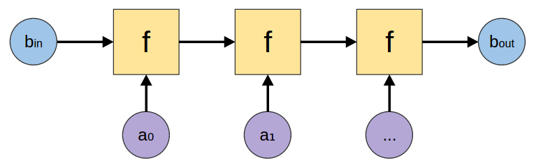
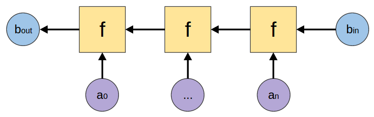
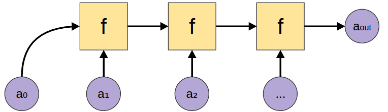
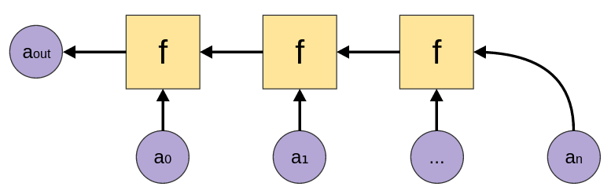
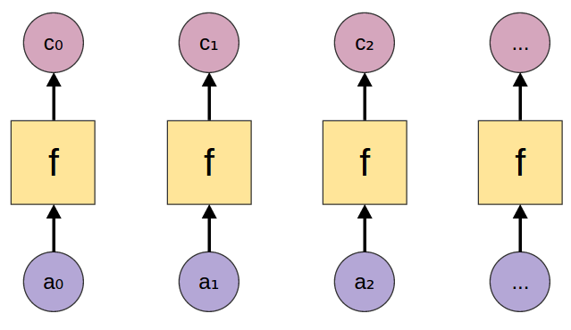
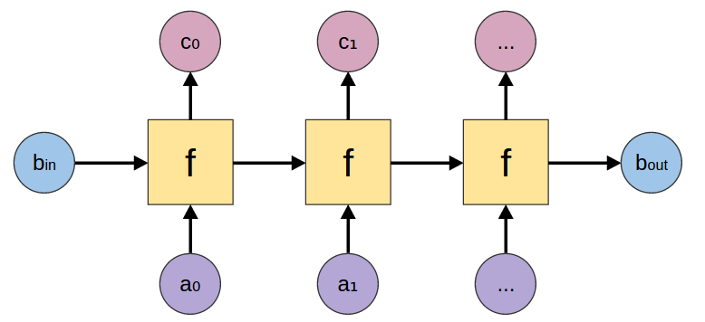
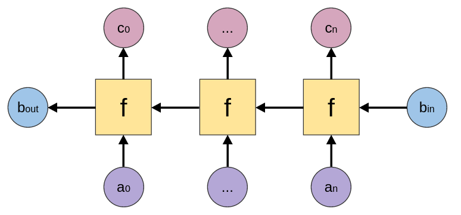
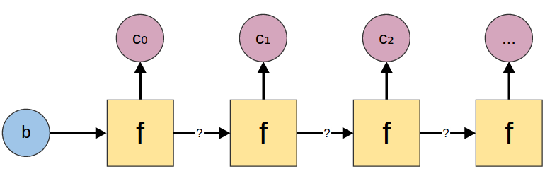

Data.List Recursion Illustrated
Posted on February 12, 2015
Data.List is a standard Haskell library. It provides lots of really helpful functions for working with lists.
In particular, Data.List provides functions for particular patterns of recursion on lists. Some of them, such as map, are familiar to many programmers. But there are lots of subtle variations, and it’s hard to keep them all straight.
The goal of this blog post is to provide a convenient reference to quickly understand all these different functions, with a couple of pretty pictures.
Folds
Folds combine all the elements of a list into a single value. For example, if you want to add up all the elements of a list you could fold the addition function over the list.
There are two choices one needs to make when doing a fold:
- Should I start on the right side, or the left side?
- Do I have a starting value? (For example, if I’m adding up the numbers in a list, I can start with zero and add each new value.)
There are four versions of fold, corresponding to each pair of choices.
foldlfoldl :: (b -> a -> b) -> b -> [a] -> b |
foldrfoldr :: (a -> b -> b) -> b -> [a] -> b |
foldl1foldl1 :: (a -> a -> a) -> [a] -> a |
foldr1foldr1 :: (a -> a -> a) -> [a] -> a |
Scans
Scans are kind of like folds with history. As they combine the elements of the input list, they remember every intermediary step and produce a list from those.
There is a scan corresponding to every version of fold.
Maps
Maps look at every element of a list and produce a corresponding output.
The basic map function just looks at the list element, but there are also accumulating maps that either get information from the left or right.
mapmap :: (a -> c) -> [a] -> [c] |
|
mapAccumLmapAccumL :: (b -> a -> (b, c)) -> b -> [a] -> (b, [c]) |
mapAccumRmapAccumR :: (b -> a -> (b, c)) -> b -> [a] -> (b, [c]) |
Accumulating maps are kind of elegant because they contain a lot of other functions. For example, if you let \(b=()\), you get regular map. And if you let \(c=()\) you get foldr/foldl. Finally, if you let \(a=()\), you get something very close to unfold from the following section.
Unfolds
Where folds take a list and produce a single value, unfolds take a single value and produce a list.
Data.List only provides unfoldr. It is called unfoldr because it is the dual of foldr, even though it actually starts on the left.
N/A |
unfoldrunfoldr :: (b -> Maybe (c, b)) -> b -> [c] |